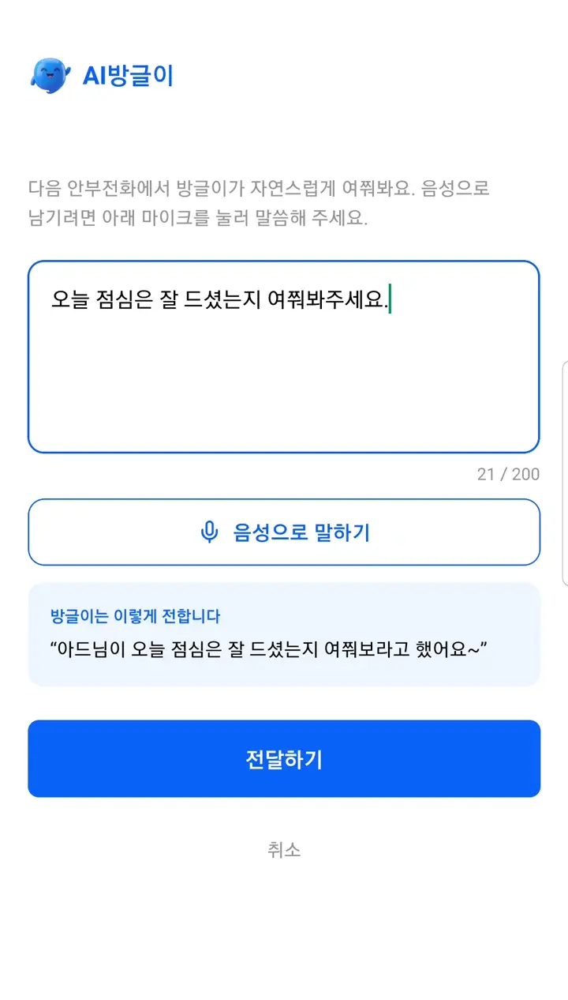
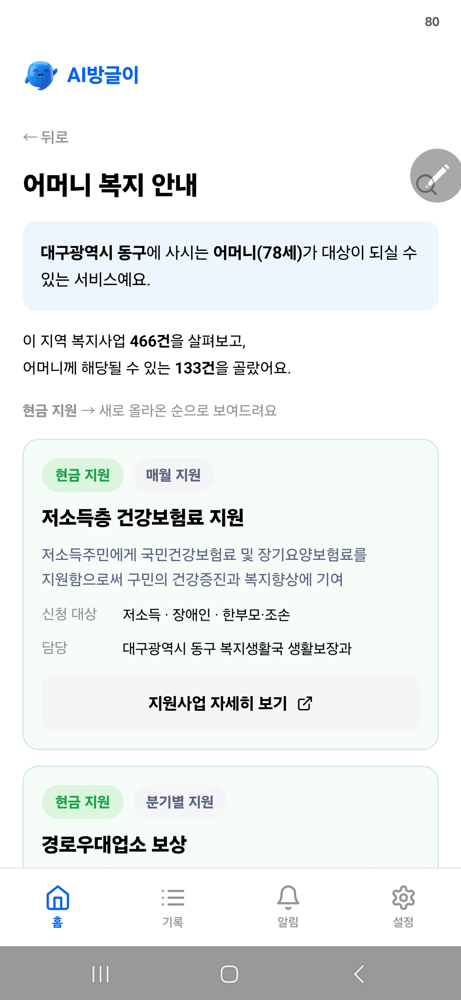

약속한 시간,
방글이가 먼저 겁니다
● 통화 중 · 02:12
 AI방글이방글이 시작하기
AI방글이방글이 시작하기
가족의 통화 사이에, 방글이
오늘 드신 점심, 오랜만에 만난 친구.
다음 전화에서 나누고 싶은 이야기가 쌓입니다.
방글이가 그 사이의 안부를 함께 챙깁니다.
 AI 생성 연출 이미지
AI 생성 연출 이미지부모님은, 편안하게
어려운 조작 없이, 전화를 받고 이야기하세요.
식사부터 날씨까지 방글이가 안부를 여쭙니다.
방글이와 어머니의 대화시연어머니 안녕하세요. 저 방글이에요.
오늘 점심은 드셨어요?
식사 안부 대화 예시
전화 방식 기준 · 통화 일정과 시간은 요금제에 따라 다릅니다.
가족은, 한눈에
방글이와 나눈 대화를 보호자 앱에서 확인하세요.
바쁜 날에는 요약으로,
더 궁금한 날에는 대화 기록으로.
국수를 드시고, 오랜만에 이야기를 나누셨어요.
대화 전문은 부모님이 동의하신 경우에만 확인할 수 있습니다.

실제 방글이 앱으로 살펴보기
부모님께 여쭤보고 싶은 이야기를 남기고,
통화가 끝난 뒤 대화를 확인하세요.
“오늘 점심은 잘 드셨는지 여쭤봐 주세요.”
전달 대기 상태를 확인해요.
이전에 완료된 통화의 대화 내용을 살펴봐요.
실제 앱 화면을 순서대로 보여주는 시연입니다.
통화 기록은 이번 부탁을 전달한 결과가 아닌, 이전 통화의 별도 시연입니다. 장면은 5초마다 전환됩니다.

방글이가 하는 일
친구분들과 점심을 드셨다고 이야기하셨어요.
전화를 걸기 전에 기상청 특보를 먼저 확인합니다. 전화가 한 통 더 오는 게 아니라, 늘 받으시던 그 통화가 오늘 날씨에 맞춰집니다.
어르신이 편하게 알아들으실 수 있는 속도와 말투로 이야기합니다.

평소 하던 말투로 한마디만 녹음하세요. 방글이가 자연스러운 존댓말로 바꿔 여쭤봅니다.
화면과 대화는 시연 예시입니다. 통화 일정은 이용 방식과 요금제에 따라 다릅니다.
우리 가족이 함께
같은 안부를 함께 확인하고,
부모님께 드릴 다음 전화를 준비하세요.
가족이 남긴 음성 메시지를
방글이의 안부 대화에 담아보세요.
유료 구독 없이 이용하는 복지 안내
안부전화 유료 요금제를 결제하지 않아도 괜찮아요.
방글이 앱에서 부모님께 해당될 수 있는
복지 지원사업과 신청 정보를 확인해 보세요.
실제 지원 여부는 각 사업의 신청 조건과 심사 결과에 따라 달라집니다.

부모님께 편한 방법으로
부모님 앱 설치 없이
휴대폰·집전화로 안부를 받습니다.
부모님 스마트폰에 앱을 설치하고
방글이와 안부를 나눕니다.
스마트폰이 없어도 괜찮아요. 쓰시던 휴대폰·집전화로 그대로 받으실 수 있어요.
표시한 금액은 모두 부가세 포함입니다.방글이가 일반 전화망으로 직접 전화를 드리기 때문에 통신 비용이 더해집니다.
월 · 부가세 포함
하루 670원꼴
월 · 부가세 포함
하루 830원꼴
월 · 부가세 포함
하루 1,000원이 안 돼요
통화는 정해진 시간 안에서 말씀을 끊지 않고 마무리합니다.
30일 무료 체험으로 시작하고, 필요에 따라 바꾸세요.
표시한 금액은 모두 부가세 포함입니다.30일
월 · 부가세 포함
하루 200원꼴
부모님 한 분 더 등록 시
월 4,900원 · 월 결제
월 · 부가세 포함
하루 300원이 안 돼요
부모님 한 분 더 등록 시
월 7,900원 · 월 결제
월 · 부가세 포함
하루 500원이 안 돼요
부모님 한 분 더 등록 시
월 13,900원 · 월 결제
하루 금액은 월 요금을 30일로 나눈 참고 금액이며 실제 결제는 월 단위입니다.
구독하기는 운영 중인 결제·관리 페이지로 연결됩니다.
네. 안부전화 유료 요금제를 구독하지 않아도 방글이 앱을 설치해 부모님께 해당될 수 있는 복지 지원사업을 찾아볼 수 있습니다. 실제 지원 여부와 신청 방법은 각 사업의 상세 안내를 확인해 주세요.
전화 방식을 선택하면 부모님은 앱 설치 없이 쓰시던 휴대폰이나 집전화로 받으실 수 있습니다. 보호자는 앱에서 통화 요약을 확인합니다.
이 페이지에서 소개하는 요약은 방글이와 부모님이 나눈 안부 대화에 대한 것입니다. 가족끼리 직접 나눈 일반 전화 내용을 기록하는 기능이 아닙니다.
가족에게 통화 요약이 전달됩니다. 대화 전문은 부모님이 동의하신 경우에만 열람할 수 있습니다.